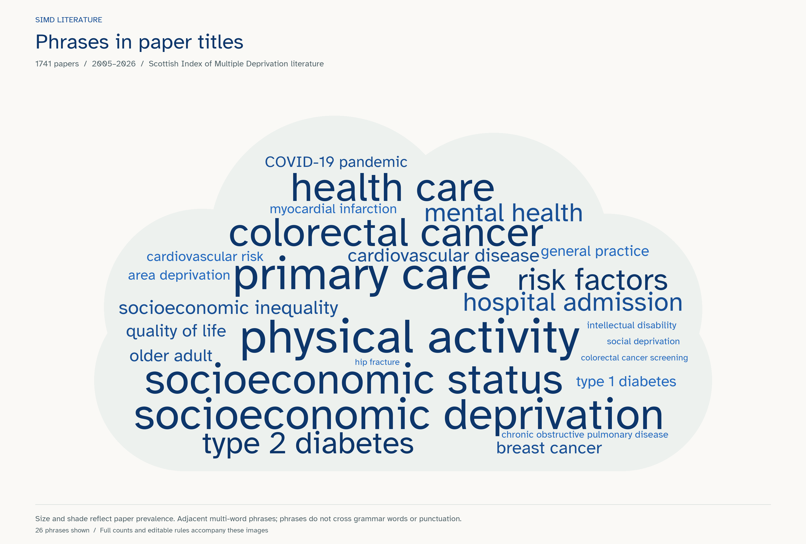
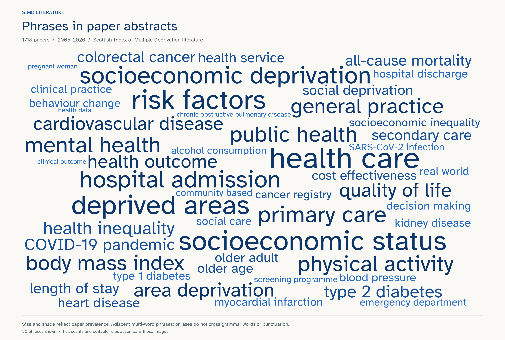

1741 indexed titles and abstracts, including papers with missing PDFs. Term size reflects the number of papers mentioning the term. Darker blue marks more frequent terms, repeating the size encoding; colour is never the only cue.
Browse and search all term rules · Review exclusions · Review exact frequencies · Method and rerun instructions

